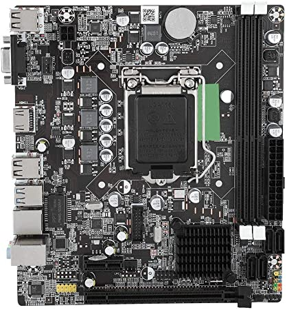
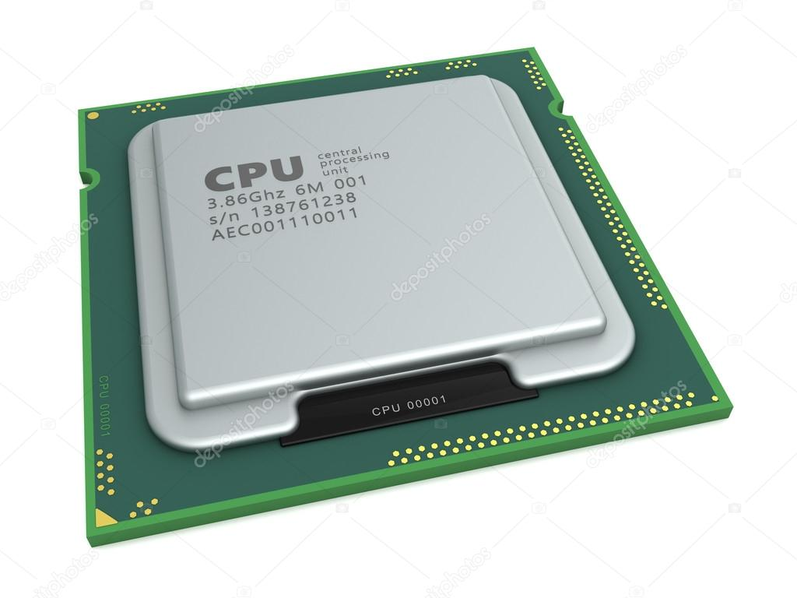
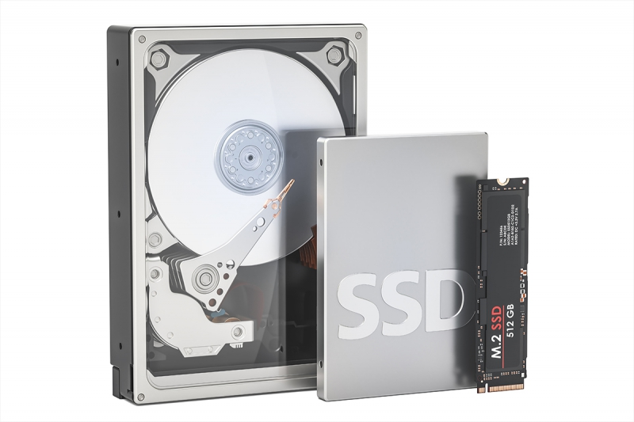
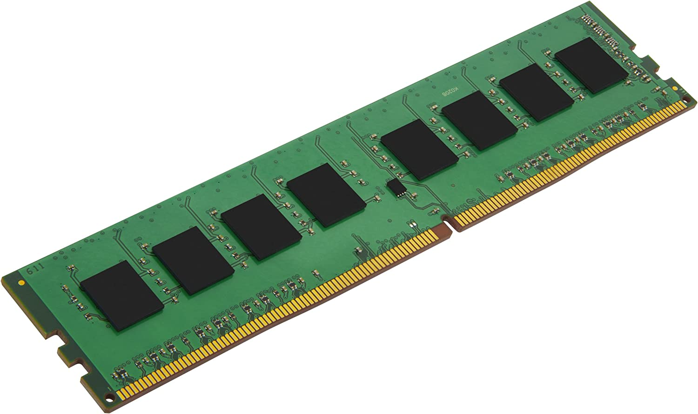

Without knowing why you need a Personal Computer (PC), it's hard to even begin looking for parts. Will it be for gaming, video editing, flying simulation, general home use, or some other use? These are just a few questions and ways PC's can be used.
Money also plays a key role into PC building, but for the most part, yes, the more money that goes towards it, the "better" it can be. HOWEVER, knowing what you need it for will definitely help in getting the best parts for the best price. For example, a desktop for general use can be built around a $500 dollar price range, while a competetive gaming machine will float above $1000 dollars.
The core components are listed below. For more in depth information on each part, and the extra components needed, click here.

Motherboard |

Processor |

Storage |

Memory |
My personal go-to is Newegg. Great pricing and even plenty of helpful resources. Locally, there's the famous Microcenter.
While there are many methods, I will default to a YouTube video that shows how to build a PC in less than 5 minutes?? Woah.
References: